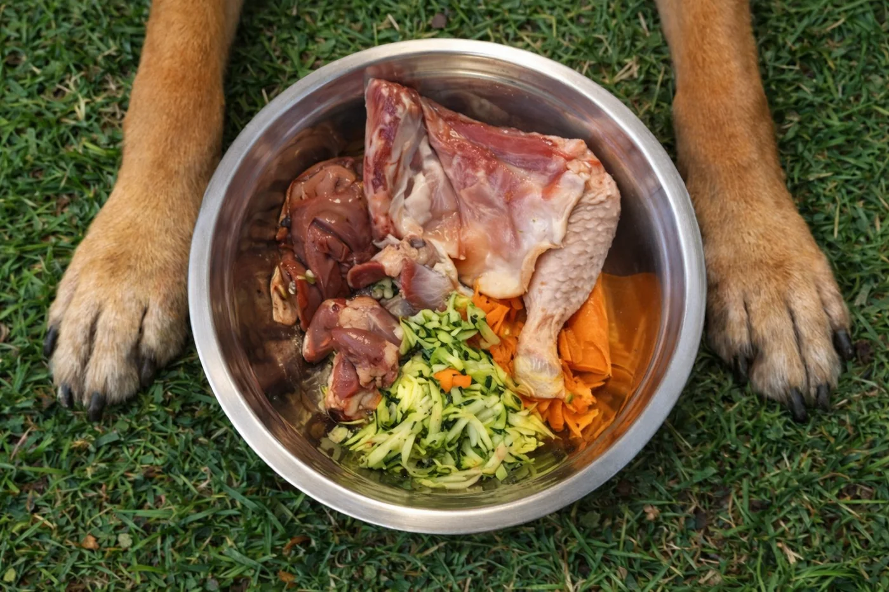

Ingredients identificables
Carn, ossos carnosos, vísceres, verdura i fruita formen les receptes BARFEAND.
BARFEAND · by El Rebost del Nord
De la nostra experiència amb la carn, a cada bol.
Som la marca d’alimentació BARF d’El Rebost del Nord. Elaborem a Andorra receptes per a gossos i gats amb ingredients identificables i informació clara a cada paquet.

El nostre origen
BARFEAND està vinculada a El Rebost del Nord. La nostra feina amb les carns i els elaborats ens ha portat a crear una gamma d’alimentació crua per a gossos i gats, preparada a Andorra.
Volem que sigui fàcil saber què hi ha a cada ració. Per això identifiquem les receptes, detallem els ingredients i mostrem la informació del lot i de la data de caducitat a l’envàs.
Descobreix les nostres receptesLa nostra manera de fer
Presentem cada producte amb informació concreta perquè puguis triar la gamma i el format que millor s’adapta a la teva compra.
Carn, ossos carnosos, vísceres, verdura i fruita formen les receptes BARFEAND.
Receptes monoproteiques amb una única espècie animal i una opció multiproteïna que combina pollastre, vedella i porc.
Formats de 500 g i 1 kg, amb lot, data de caducitat i indicacions de conservació congelada a −18 °C.
Formació
La formació de Roser Borras Corral inclou tres diplomes d’educació i etologia canina i la inscripció en un programa de nutrició i alimentació canina i felina.
Inscripció al programa «Experto Universitario en Nutrición y Alimentación de Caninos y Felinos» de TECH Universidad Tecnológica.
Curs teòric-pràctic de Bon Gos – Etologia i Educació Canina, impartit els dies 6, 7 i 8 de novembre de 2009.
Diploma de la Reial Societat Canina de Catalunya, emès a Barcelona el 20 d’abril de 2009.
Diploma de la Reial Societat Canina de Catalunya, emès a Barcelona el 17 de setembre de 2009.
Continuem?